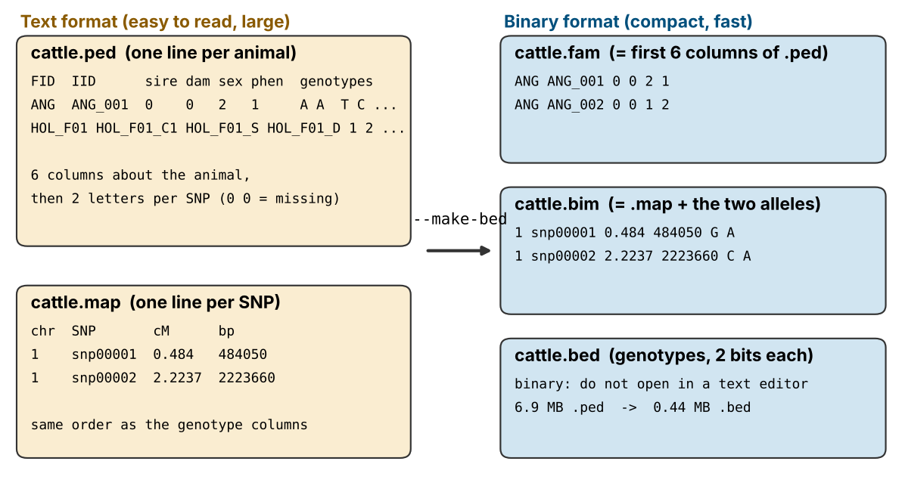

3 Genotype files: what PLINK reads and writes
Before running any analysis it pays to open the files and look at them. Most problems I have seen in student projects (wrong sex codes, swapped alleles, a phenotype of -9 read as a real value) are visible in the first few lines of a file.

3.1 The text format: .ped and .map
The .ped file has one line per animal. The first six columns describe the animal, and then come two letters per SNP.
| Column | Name | Meaning | Codes |
|---|---|---|---|
| 1 | FID | Family ID | Any text; in livestock often the breed, herd or sire family |
| 2 | IID | Animal ID | Must be unique within its FID |
| 3 | PAT | Sire ID | 0 = unknown |
| 4 | MAT | Dam ID | 0 = unknown |
| 5 | SEX | Sex | 1 = male, 2 = female, 0 = unknown |
| 6 | PHENOTYPE | Trait value | 1 = control, 2 = case, -9 or 0 = missing; any other number = quantitative |
| 7 onwards | genotypes | Two alleles per SNP | A C G T or 1 2; 0 0 = missing |
Here are two lines from our practice file:
ANG ANG_001 0 0 2 1 A A A A T T T C ...
HOL_F01 HOL_F01_C1 HOL_F01_S HOL_F01_D 1 2 A G ...The first animal is an Angus cow (sex 2) with no recorded parents and phenotype 1 (healthy). The second is a Holstein bull calf whose sire and dam are both in the file, and phenotype 2 (sick).
The .map file has one line per SNP, in the same order as the genotype columns of the .ped:
| Column | Meaning |
|---|---|
| 1 | Chromosome |
| 2 | SNP name |
| 3 | Genetic distance (centimorgans; 0 if unknown, which is fine) |
| 4 | Base-pair position |
1 snp00001 0.484 484050
1 snp00002 2.2237 22236603.2 The binary format: .bed, .bim and .fam
Text files are huge (each genotype takes four characters: two letters and two spaces) and slow to read. PLINK’s binary format stores each genotype in 2 bits, so our practice file shrank from 6.9 MB to 0.44 MB, and PLINK reads it many times faster. Convert first, and then always work with the binary files.
plink --file cattle --cow --make-bed --out cattle.famis the first six columns of the.ped..bimis the.mapplus two extra columns: allele 1 (A1) and allele 2 (A2)..bedholds the genotypes. It is not text, so do not open it in an editor.
cattle.bim: 1 snp00001 0.484 484050 G A
1 snp00002 2.2237 2223660 C APLINK 1.9 makes A1 the minor (rarer) allele by default. Every effect size PLINK reports (odds ratio, beta) is for A1. If you need A1 to be a fixed allele, for example the reference allele of the genome assembly, add --keep-allele-order or set it with --a1-allele (Chapter 5). PLINK 2.0 keeps the input order and calls the alleles REF and ALT.
3.3 Other formats you will meet
| Format | Files | Typical use |
|---|---|---|
| Transposed | .tped + .tfam |
One SNP per line; some older programs |
| Long | .lgen + .map + .fam |
One genotype per line; database exports |
| Additive | .raw from --recode A |
0/1/2 counts of A1 per animal; R, Python, genomic prediction |
| VCF | .vcf or .vcf.gz |
Sequencing tools, imputation (BEAGLE), bcftools |
| PLINK 2.0 | .pgen + .pvar + .psam |
Large data and dosages |
The additive .raw file is the one you will use most for your own models. Each genotype column counts copies of the allele named in the header:
FID IID PAT MAT SEX PHENOTYPE snp00001_G snp00002_C snp00003_A snp00004_T
ANG ANG_001 0 0 2 1 0 0 0 1So snp00004_T = 1 means ANG_001 carries one T at that SNP. Missing genotypes appear as NA.
3.4 Extra files: phenotypes, covariates and clusters
Real projects keep traits and covariates in separate files. All of them start with FID and IID:
pheno.txt FID IID WWT BW YWT BRD
ANG ANG_001 265.0 38.8 523.1 1
covar.txt FID IID SEX_M FEEDLOT AGE HERD_N
ANG ANG_001 0 0 215 1
breed.clst ANG ANG_001 ANG (cluster file: no header, third column = group)You point PLINK to them with --pheno, --covar and --within. Missing values are -9 everywhere unless you change the code with --missing-phenotype.
head cattle.fam and head cattle.bim take two seconds. Check that sexes are 1 and 2 (not M and F), that phenotypes look sensible, and that chromosome codes are numbers your species flag accepts.
3.5 Exercises
Try each question first, then open the answer. The challenge goes a step further than the chapter.
1. How many SNPs are on chromosome 14, and how many on the X chromosome? Use the .bim file only.
awk '$1 == 14' cattle.bim | wc -l # 230
awk '$1 == 30' cattle.bim | wc -l # 250 (with --cow the X is coded 30)2. In cattle.bim, which allele is A1 for snp00001? In a --recode A file, what would the value 2 mean for this SNP?
The first line is 1 snp00001 0.484 484050 G A, so A1 = G and A2 = A. In a .raw file the column is called snp00001_G and counts G alleles, so 2 means the animal is GG.
Challenge. Compare the size of cattle.ped with cattle.bed. Why is the binary file so much smaller? Work out how many bytes the .bed file should have.
cattle.ped is 6,940,164 bytes and cattle.bed is 436,803 bytes, about 16 times smaller. The .ped file spends two letters and two spaces on every genotype, while the .bed file packs 4 genotypes into one byte (2 bits each). Each SNP needs ceiling(361 / 4) = 91 bytes, so 4,800 SNPs × 91 bytes + 3 header bytes = 436,803 bytes, exactly the file size.